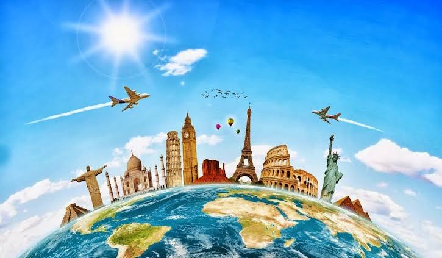

Why Travelling is Important
Cause being in one place sucks. I'd rather be somewhere else, literally anywhere rather than staying at the same place for what seems like an eternity. Just the thought of being in a new place, with new people and new experiences makes me feel alive. Traveling is not just about seeing new places, it's about experiencing life in a different way. It opens your mind to new perspectives and helps you appreciate the world around you. It also feels good to be able to freely roam the places once you wanted to visit. The feeling of being able to explore new places and create memories that will last a lifetime is truly priceless.

Why I Love Travelling
I like travelling because it makes me feel free. I personally dont want to dedicate my life living in the same place all the time. And the tought of even staying in one place for a long time makes me feel suffocated. I like to explore new places, meet new people, and experience different cultures. Traveling allows me to break free from my routine and experience life in a different way. It gives me a sense of adventure and excitement that I can't find anywhere else. It also feels good to be able to meet new people and make new friends while travelling. The connections I make with people from different backgrounds and cultures will improve my life in countless ways.
Benefits of Travelling
- You learn about new cultures, food and languages, which makes you more open minded.
- You develop problem solving skills and become more adaptable.
- You gain a broader perspective on life and the world around you.
And you dont need much to travel
- A phone charger, because being at 5% battery sucks.
- A few friends who are as interested as you are.
- A good sense of humor to deal with unexpected situations.
- A window seat, or else you will spend the whole trip emotionally damaged.
| Place | State | Experience Rating |
|---|---|---|
| Rishikesh | Uttarakhand | 5/5 |
| Shimla | Himachal Pradesh | 4/5 |
| Ooty | Tamil Nadu | 4/5 |
| Kodaikanal | Tamil Nadu | 4/5 |